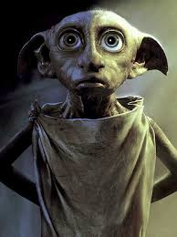

Dobby is a "house-elf" in the Harry Potter series. He was once owned by the Malfoy family, and he first appears in Harry Potter and the Chamber of Secrets to discourage Harry from returning to Hogwarts. Dobby later tries to keep Harry away from Hogwarts by magically sealing off the hidden entrance to Platform 9¾, only to be foiled when the protagonists pilot Arthur's flying Ford Anglia to school. During a Quidditch match, Dobby enchants a Bludger to chase Harry, hoping to cause him enough injury to be sent home; but the Bludger only manages to break Harry's arm. Dobby discloses that when an enslaved house-elf is presented with an article of clothing by his or her master, that house-elf is subsequently set free; and when Harry (after returning from the Chamber of Secrets) discovers that Dobby's master is Lucius Malfoy, he tricks Malfoy into setting Dobby free, a feat that secures him the house-elf's undying loyalty. He was now willing to save Harry Potter no matter if it would mean risking his life, because after all, "Harry Potter set Dobby free!"
